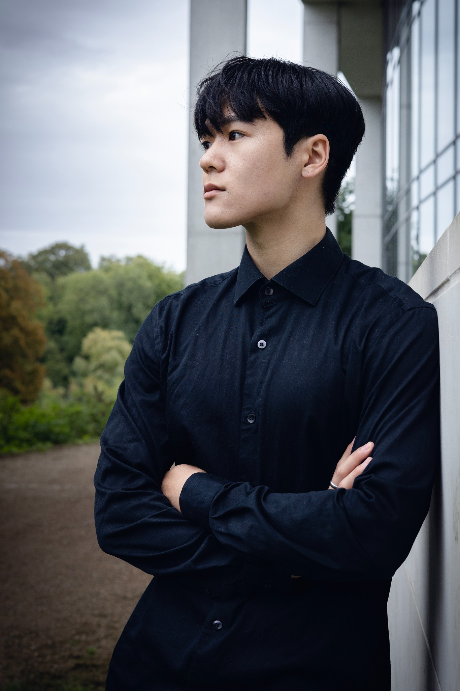
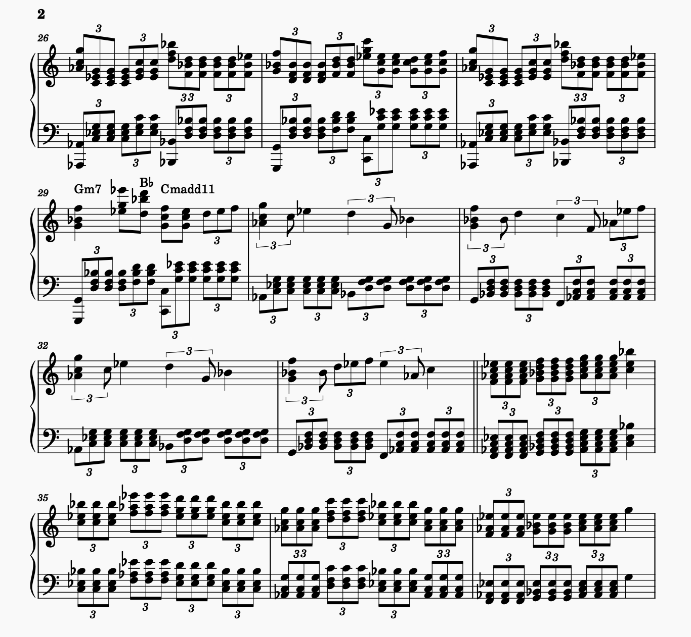

Composer / Pianist / Producer
Robin Wohner — Composer, Pianist and Producer
Robin Wohner began playing classical piano as a child. Growing up particularly active in Danish piano competitions and youth concerts, he later pursued further musical education at Det Kongelige Danske Musikkonservatorium (RCM) and the talent acceleration program of Jacob Gade.
Robin lives in Copenhagen, Denmark.


A note
“I just find the concept of music so much fun. In a miraculous way, a series of sound waves clash with each other, combine, resonate, and culminate in a universal language that everyone understands by nature. Joy, anxiety, confidence, nostalgia, rage and infinitely more. It's just amazing to me.”